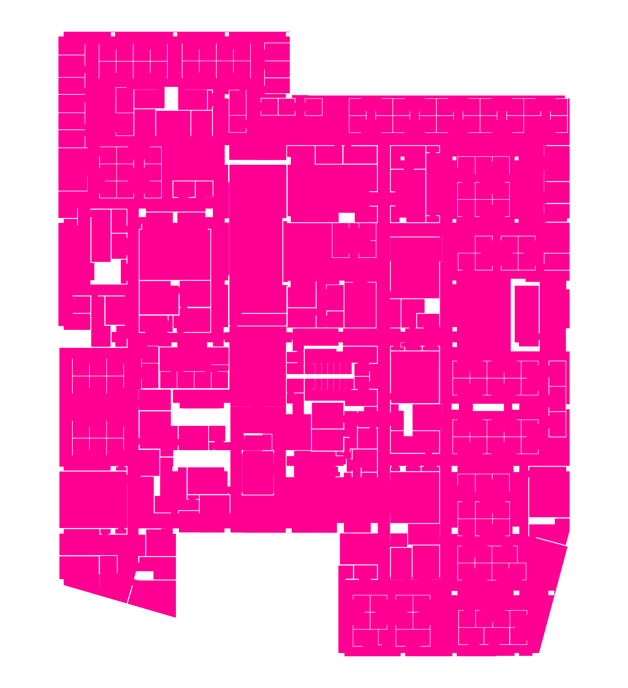
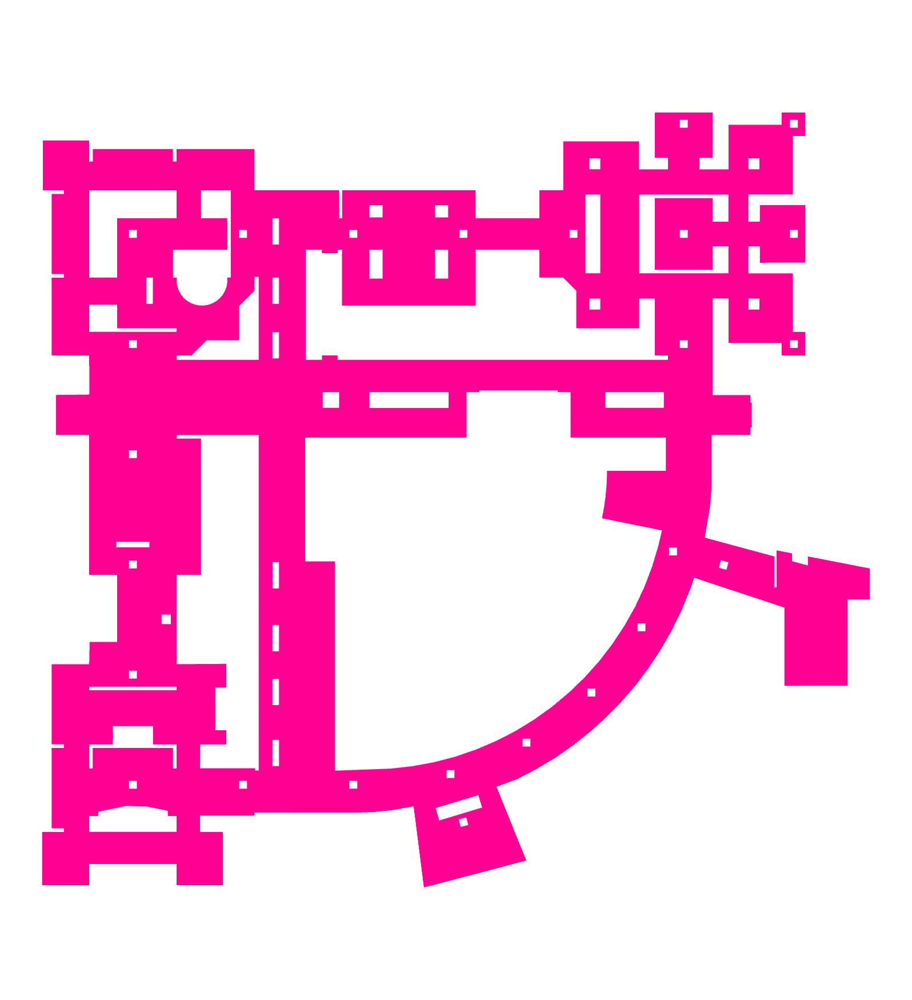
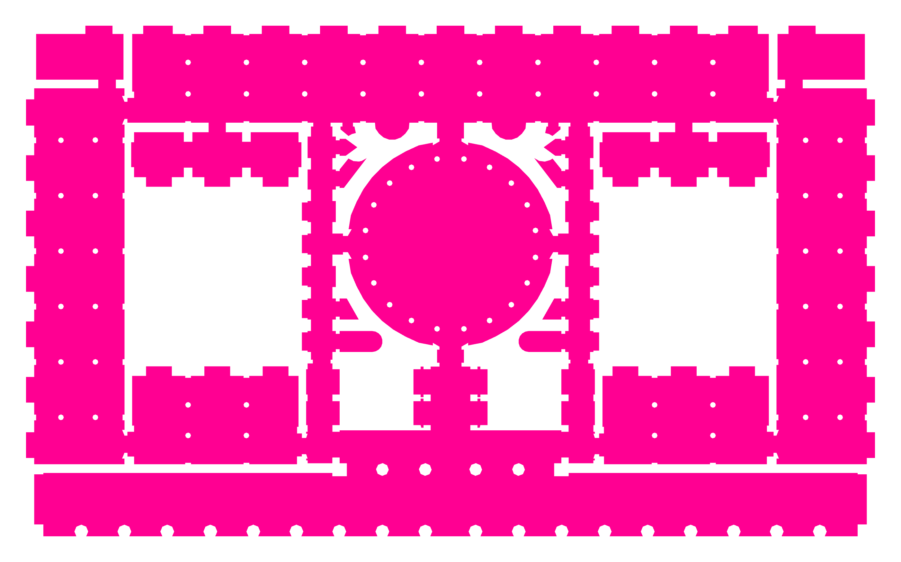
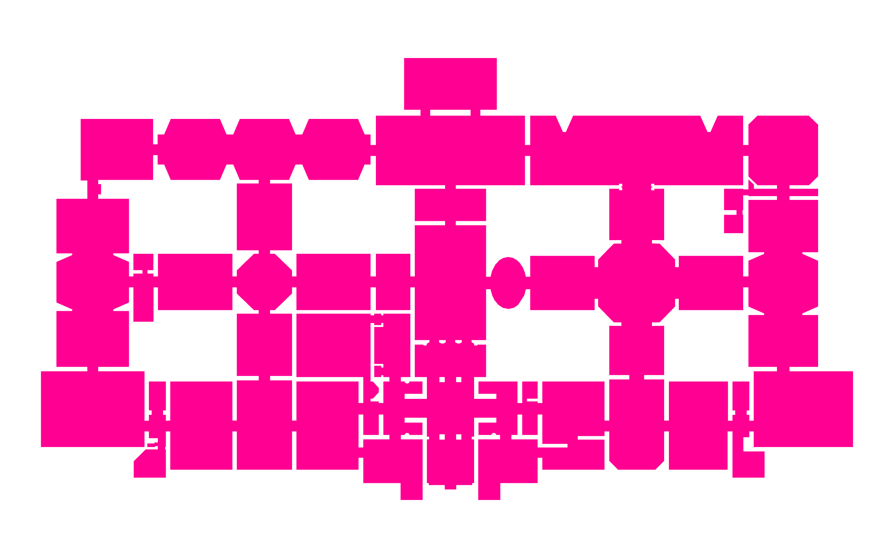
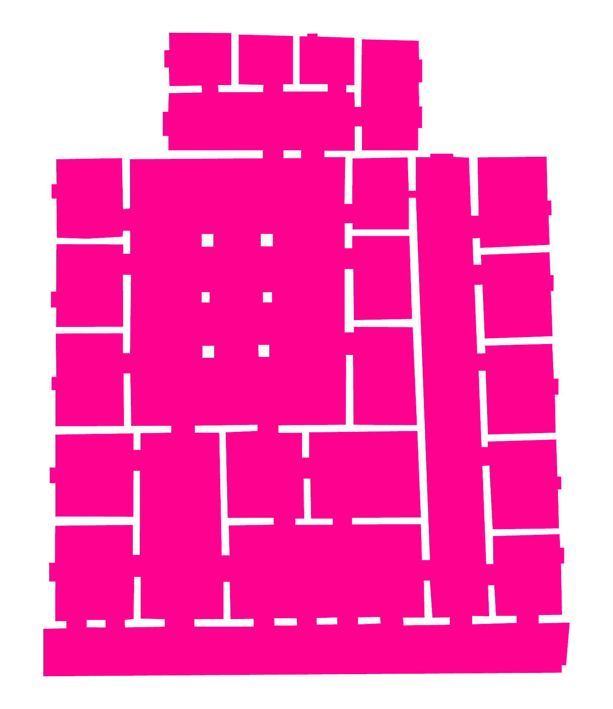
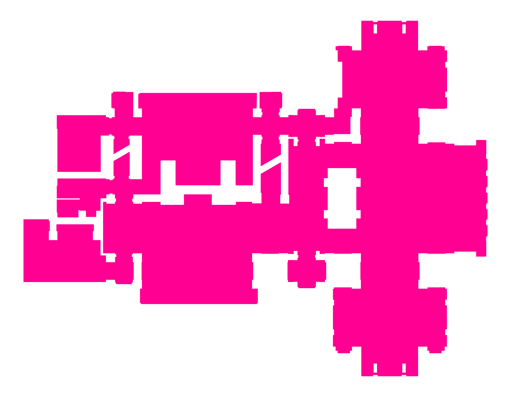

The Environment
Almost every analysis starts with an Environment component. It is built
from a closed boundary curve and any number of obstacles (walls,
columns, furniture). Curves need to be simplified into polylines.
Internally, the Environment works with integer coordinates, which keeps visibility and polygon
operations exact. Precision Scaling sets how many decimals are kept: 2
means a model in metres is resolved to the centimetre.






Dependencies
Syntaktika is written in C# and builds on a few open libraries. All of them ship with the plugin,
except pyvoronoi, which Rhino installs on first use.
- RhinoCommon Rhino 8 SDK
- Every input and output is ordinary Rhino geometry: points, curves, polylines and meshes. RhinoCommon
provides these types, and the Grasshopper SDK provides the components themselves.
- Clipper2 polygon clipping
- The Environment stores its boundary and obstacles as Clipper paths with 64-bit integer coordinates,
which is where the integer geometry comes from: coordinates are multiplied by Precision Scaling and
rounded. Clipper then computes unions, differences, areas and point-in-polygon tests exactly, for
example to build the free space of a plan and the isovist polygons.
- QuikGraph graphs
- The .NET graph library, the maintained successor of QuickGraph. The medial axis, its parts and the
visibility and threshold maps are stored as QuikGraph graphs, and its algorithms, such as connected
components, walk them.
- MSAGL graph layout
- Microsoft Automatic Graph Layout draws graphs as readable diagrams. Syntaktika uses its layered
(Sugiyama) layout to place the nodes and route the edges.
- pyvoronoi Python, medial axis
- The medial axis comes from the Voronoi diagram of the plan's line segments, computed by
pyvoronoi, a Python wrapper of the Boost.Polygon segment Voronoi.
How Python runs inside Syntaktika
No separate Python installation is needed. The script that calls pyvoronoi
(SegmentVoronoi.py) is embedded in the plugin and runs on Rhino 8's own CPython 3 engine,
the one behind the Script Editor, through RhinoCode (Rhino.Runtime.Code):
- Start the engine. If Python 3 is not running yet, Syntaktika starts it in the
background, without opening a window, and the component recomputes once it is ready.
- Install the package. The script's header,
# r: pyvoronoi==1.2.4, tells
Rhino to install the package with pip the first time, so the first run needs an internet connection.
Version 1.2.4 is pinned because it is the latest with prebuilt packages for Rhino 8's Python 3.9;
newer versions would need a C++ compiler.
- Solve. pyvoronoi works on integers, so segment endpoints are multiplied by Precision
Scaling and rounded. The script returns each Voronoi cell with its source segment and category, and
Syntaktika turns them back into Rhino polylines at the original scale.